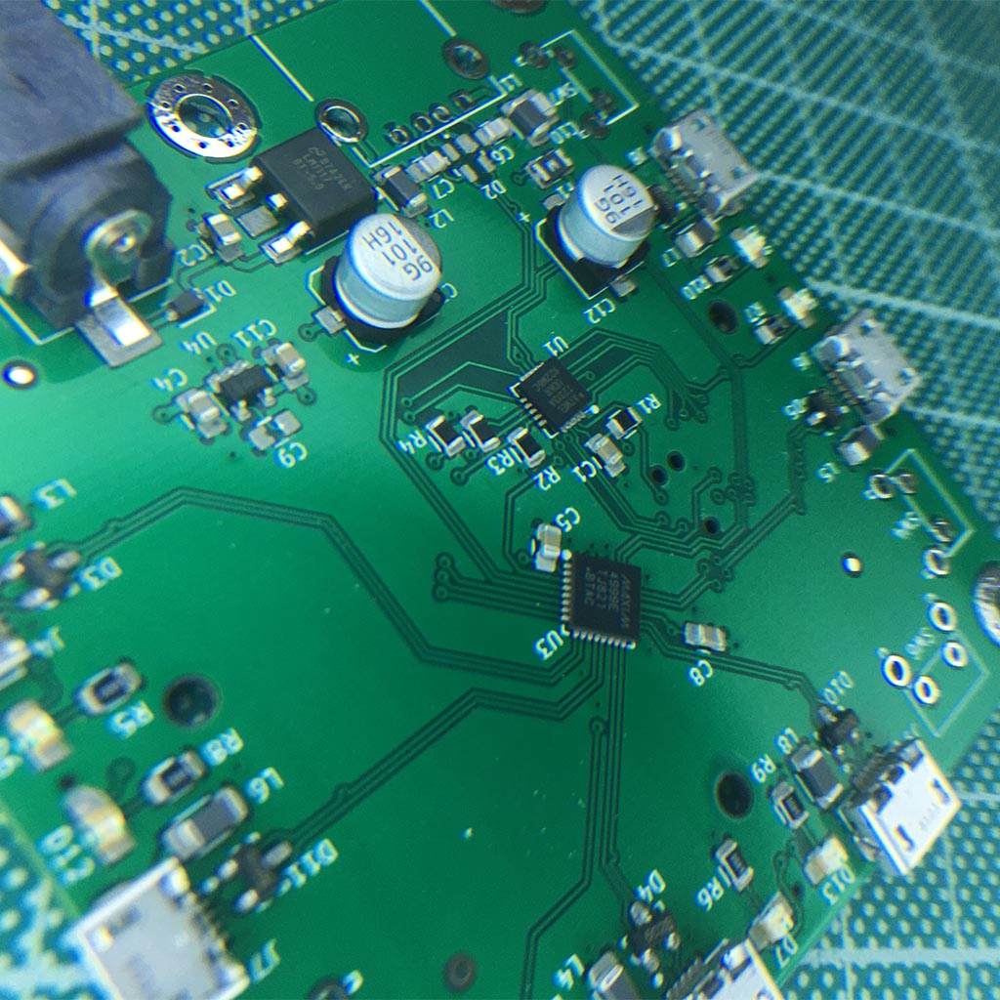
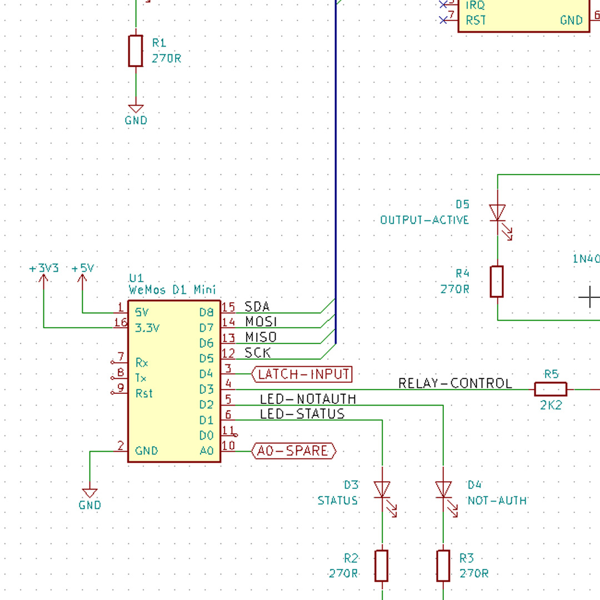
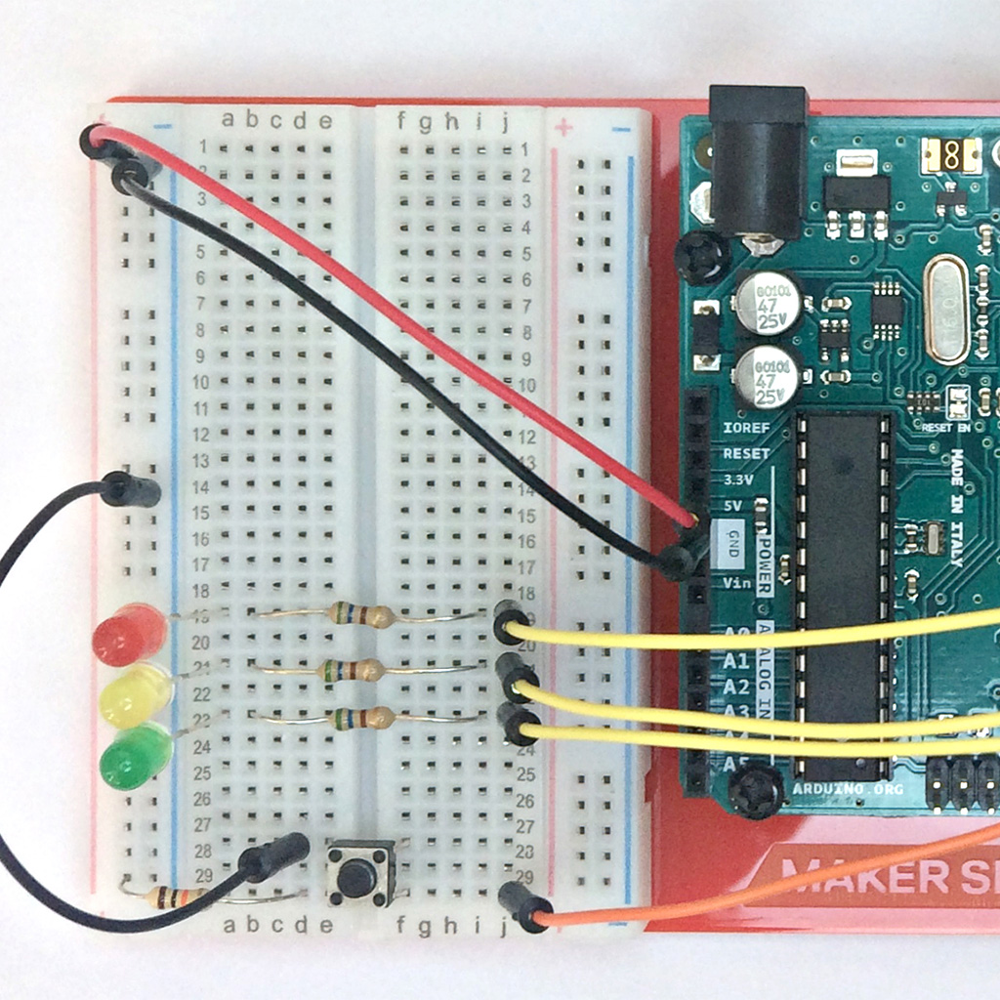
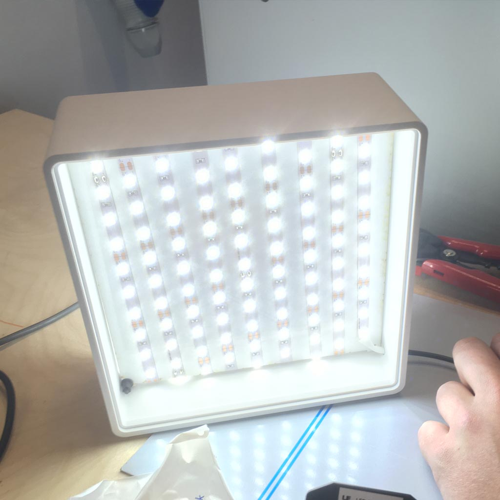
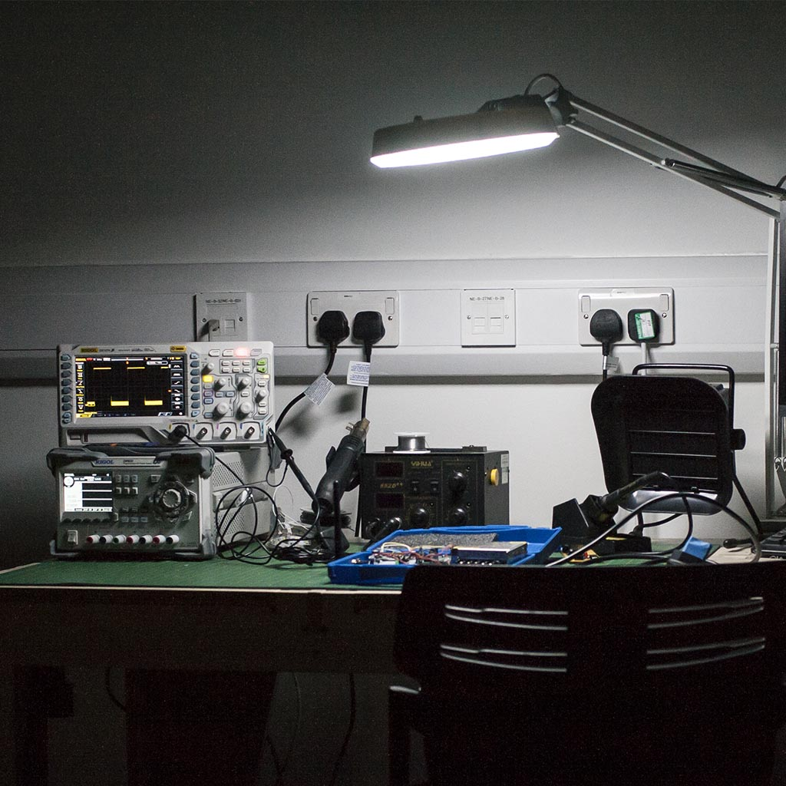
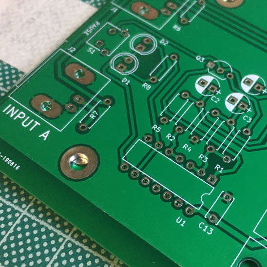

Electronics Prototyping
Arduino, Programming & Analog
Equipment
- Rigol DS1054Z Oscilloscope
- Rigol DP832 Power Supply
- SMD Rework Stations
- Soldering Irons
Separate to the University's electronics laboratories the Maker Space offers access to test equipment, materials, and supplies for students in all disciplines. We can offer support on electronics projects and teach workshops on Arduino and open source software like KiCAD.
Ask our technicians for help with your circuit design or PCB layout, and if there's a specific skill or workshop you are looking for let us know and we will get something set up.





